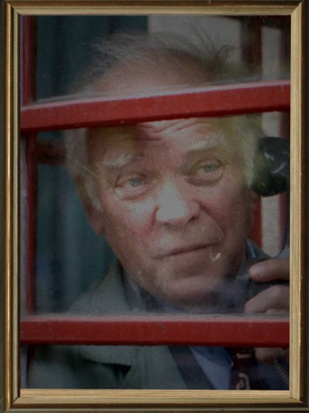

#8283 Arschkalt

 IMDB-Wertung: 6.3 / 10
IMDB-Wertung: 6.3 / 10  Metascore: 0
Metascore: 0 
Rainer Berg ist ein vom Leben enttäuschter Tiefkühlkost-Lieferant. Er hat sich von der Welt zurückgezogen, um emotionalen Verletzungen aus dem Weg zu gehen. Seine Lebensauffassung gerät ins Wanken, als er einen neuen Kollegen, Ex-Friseur Moerer, zugewiesen bekommt, der sich als Nervensäge erweist. "Dieser Transporter ist zu klein für zwei!" Aber zwecklos, Berg kann seinen lästigen Beifahrer erst dann wieder loswerden, wenn er ihn zu einem guten Verkäufer gemacht hat, so die Forderung der neuen Chefin. Von dem arschkalten Misanthropen Berg ist plötzlich Teamgeist gefragt.
Jahr: 2011
Dauer: 82 Minuten
FSK: 12
Land: Deutschland Studio: NFP Marketing & DistributionTonspuren:
Untertitel:
Auflösung: 720p (1280x720) Größe: 1341 MB
Genre: Drama, Komödie, Liebe
Regisseur: André Erkau
Drehbuch: André Erkau
Soundtrack: Dürbeck & Dohmen
Darsteller:
 Herbert Knaup als Rainer Berg
Herbert Knaup als Rainer Berg-  Peter Franke als Berg sen.
- Kirsten Block als Frau mit Morgenmantel
 Philipp Hochmair als Weynfeldt
Philipp Hochmair als Weynfeldt- Mathias Junge als Wachmann
- Wolfgang Riehm als Arbeiter 1
- Johannes Allmayer als Tobias Moerer
- Elke Winkens als Lieke van der Stock
 Thorsten Merten als Erhard
Thorsten Merten als Erhard- Marion Breckwoldt als Pflegerin
- Jochen Stern als Schwerhöriger Mann
- Dagmar Sachse als Frau mit Schürze
- Johannes Rotter als Sofa-Jogger
- Dorothea Walda als Alte Dame
- Josefine Erkau als Mädchen mit Luftballon
- Nomena Struss als Kantinenmanagerin
- Wolfgang Suchner als Pfarrer
- Johanna Geißler als Petra Rose
- Heinz Lieven als Staatsanwalt
- Mira Partecke als Steffi
- Christian Vennefrohne als Arbeiter 2
- Frank Grischek als Mann mit Akkordeon
- Anouk Bödeker als (uncredited)
- André Erkau als Ansagen Klimahaus (uncredited)
- Nina Kaiser als (uncredited)
- Tina Middendorf als Radiomoderatorin (uncredited)
Datei: X:\2011(A-F)\Arschkalt (2011, FSK12, 1280x720).mkv seit 16.02.2018
Festplatte: HD 2010(G-Z)-2011(A-F)
 Es gibt insgesamt 86 Filme in der Gruppe '2011(A-F)'
Es gibt insgesamt 86 Filme in der Gruppe '2011(A-F)'